Welcome to My Portfolio
Silas Mugambi Mungiria
Welcome to my portfolio! I'm Silas Mugambi Mungiria, a versatile data analyst and web developer who uses technology to drive informed decisions and create exceptional user experiences. I specialize in leveraging data to uncover insights and developing websites that meet diverse user needs. With my commitment to staying up-to-date with the latest trends and technologies, I continually enhance my skills to deliver innovative solutions.
About Me
Headline
As a data analyst and web developer, I bring a unique perspective to the table. With my expertise in data analysis and web development, I am able to provide insights that drive informed decisions and create exceptional user experiences. I specialize in leveraging data to uncover insights and develop websites that meet diverse user needs. My approach to data analysis involves a deep understanding of statistical methods and the ability to identify trends and patterns that lead to actionable insights. This helps me to develop websites that meet user needs and exceed expectations.
I am committed to staying up-to-date with the latest trends and technologies in the field, which allows me to continually enhance my skills and deliver innovative solutions. I have a passion for technology and its potential to transform the way we work and live. I believe that by leveraging technology, we can make more informed decisions, create better user experiences, and drive innovation in all areas of life.
my portfolio, you'll find examples of my work that showcase my skills in data analysis and web development. From analyzing complex data sets to developing user-friendly websites, I am dedicated to providing exceptional service and delivering results that exceed expectations. Whether you're looking for insights to inform your business strategy or need a website that meets the needs of your users, I have the expertise to help you achieve your goals.
Skills
- Data Analysis
- Web Development
- Teaching
✓ Microsoft Excel (VLOOKUP, Pivot Tables, Charts, Conditional Formatting, String Functions).
✓ SQL (MySQL, SQL Server).
✓ Python (Pandas, NumPy, Matplotlib, Scikit-learn, and Seaborn).
✓ Data Visualization (Tableau, Power BI).
✓ Machine Learning & Deep Learning
✓ Analytical Mind-set & Problem-Solving Skills.
View Projects✓ Responsive Design: building websites that are optimized for viewing on a variety of devices
✓ Version Control: using a system to track changes to a project over time
✓ Debugging: troubleshooting and fixing issues with a website
✓ SEO: optimizing a website for search engines to improve its ranking in search results
View Projects✓ Effective communication with students, parents, and colleagues
✓ Subject Matter Expertise and able to communicate complex ideas
✓ Classroom Management and maintainance of a positive learning environment
✓ Lesson Planning for engaging lessons
✓ Differentiated Instruction
✓ Proficient in using technology to enhance teaching and learning
✓ Assessment and Evaluation
Projects
- Data Analysis
- Web Development
-

Project 1 - Loan Issuance
Excel dashboard that tracks loan issuance and displays key metrics, providing insights for data-driven decision making and effective loan portfolio management.
View DetailsLoan Issuance
1. The dashboard helps analyze trends over time, compare performance across different loan types, and identify potential areas of risk or opportunity. It includes interactive charts and tables, allowing for easy analysis of trends and comparison of performance across different loan types. This make it easy to spot patterns and gain insights.
Overall, this Excel dashboard helps users make data-driven decisions and effectively manage the loan portfolio.
- Loan Volume
- Overall Growth
- Top Customers
- Default Rates
2. These metrics provide a comprehensive view of the loan portfolio's financial health. They allow users to track the overall performance of the loan portfolio, identify areas of growth or decline, and make informed decisions on future loan issuance.
3. The growth rate graph on the dashboard allows users to easily visualize the rate of growth of the loan portfolio over time. This metric is crucial for identifying trends and making informed decisions on future loan issuance and investment
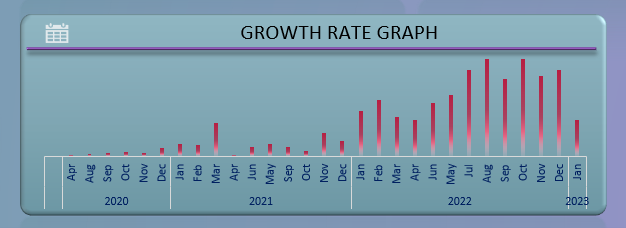4. The fines per category, top customers and count of loans per category metrics on the dashboard provide insights into the performance of the loan portfolio. These metrics allow users to identify the most profitable categories, top performing customers and the number of loans given out in each category. This information can be used to make informed decisions on future loan issuance, marketing and investment strategies.
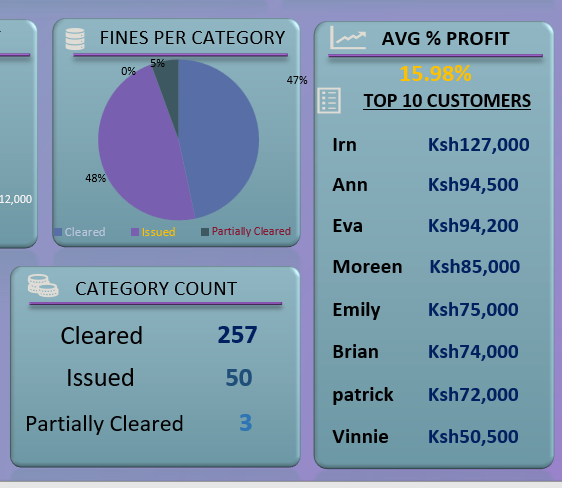5. The monthly profit per capital metric on the dashboard helps users to track the profitability of the loan portfolio on a monthly basis. This metric allows to identify which months are more profitable and make informed decisions on future loan issuance and investments.
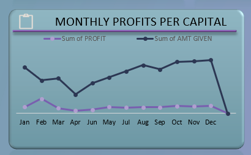 Back Home -

Project 2 - Customer Analysis
Tableau dashboard for analyzing customer data. It provides detailed insights through interactive visualizations, allowing for easy identification of key trends and patterns.
View DetailsCustomer Analysis
1. The "Customer Analysis Tableau Dashboard" presents a comprehensive view of customer data, with eight interactive charts providing insights into sales, revenue, and customer behavior. Key metrics of the dashboard are listed after the image:
The link to the project is at the bottom of this page.
- Revenue based on Age
- Revenue per State
- Revenue based on Month of the year
- Revenue percentage per Region
- Revenue per Category
- Quantity - Discount Correlation
2. The "Total Revenue" chart shows the overall revenue generated by the customers. This chart provides a quick and easy way to track the performance of your business over time while the "Category Filter" allows you to segment your customer base by product category, enabling you to analyze the performance of different product lines.
3. The "Revenue based on Age" chart breaks down revenue by age group, providing insights into which age groups are most valuable to your business.
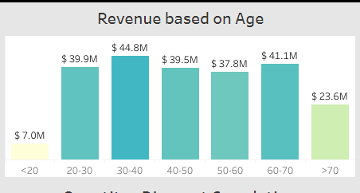4. The "Quantity - Discount Correlation" chart shows the relationship between the quantity of a product sold and the discount offered, providing insights into how discounts impact sales.
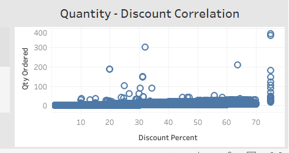5. The "Revenue percentage per Region" donut chart shows the percentage of total revenue generated by customers in each region, helping you understand which regions are the most important for your business.
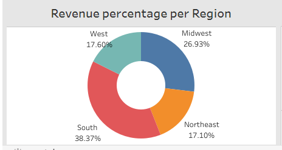6. The "Revenue per Category" batterfly chart shows the revenue generated by each product category, helping you understand which products are the most profitable.
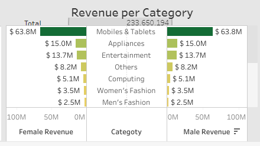7. The "Revenue based on Month of the year" chart shows the revenue generated by customers in each month of the year, providing insights into which months are the most profitable for your business.
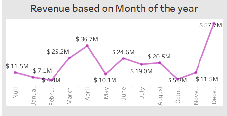Overall, this dashboard provides valuable insights into customer behavior, sales trends, and revenue performance, allowing users to make data-driven decisions and optimize their business strategies.
Visit Project -

Project 3 - E-Commerce Sales
This dashboard provides valuable insights into sales performance, customer acquisition, and market trends, helping businesses make data-driven decisions to drive growth and increase profitability.
View DetailsProject 1
1. This E-Commerce Sales Analysis dashboard provides valuable insights into sales performance, customer acquisition, and market trends, helping businesses make data-driven decisions to drive growth and increase profitability. Key parts of the dashboard are listed below:
The link to the project is at the bottom of this page.
- Market Share by Sales
- Market wise Customer Acquisition per Month
- Category wise Year Total Quantity vs Previous Year Total Quantity Sales
- Order Quantity
- Profit
- Sales
2. The "Market Filter" and "Category Filter" charts provide a powerful tool for segmenting and analyzing sales data by allowing users to filter and analyze sales data by market and product category respectively.
3. The "Total profit vs Previous Year Total profit, Total Sales vs Previous Year Total Sales, Total Quantity Sold vs Previous Year Total Quantity Sold" chart provides a comprehensive view of the e-commerce sales landscape by comparing the current year's order quantity, profit, and total sales for each category against the previous year's data.
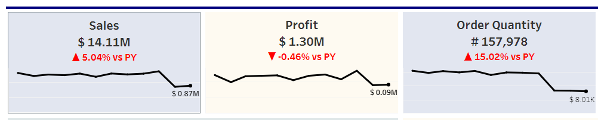
This chart offers insight into customer preferences, profitability, and overall sales performance, and can help inform strategic business decisions by displaying the current year's order quantity, profit, and total sales for each category in one chart, making it easy to spot trends and gain insights.4. The "Category wise Year Total Quantity vs Previous Year Total Quantity Sales" chart compares the total quantity sold in the current year against the total quantity sold in the previous year for each category, allowing for the identification of category sales trends and potential areas for growth.
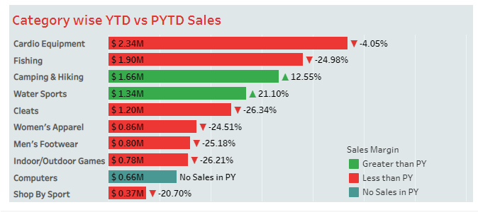5. The "Market Share by Sales" donut chart provides a clear visual representation of the market share of various sales channels, helping to identify which channels are driving the most revenue.
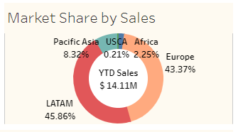6. The "Market wise Customer Acquisition per Month" chart tracks the number of new customers acquired by market on a monthly basis, providing insight into which markets are growing and which are stagnant.
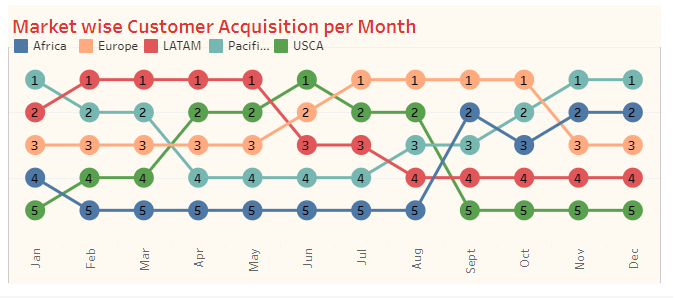 Visit Projects
-
Project 1 - KenPrime Academy
KenPrime Academy, an online school website allows students to learn remotely. It includes features such as online classes, assignment submissions, and progress tracking. This website helped improve the flexibility and accessibility of education for the students.
Visit Site -
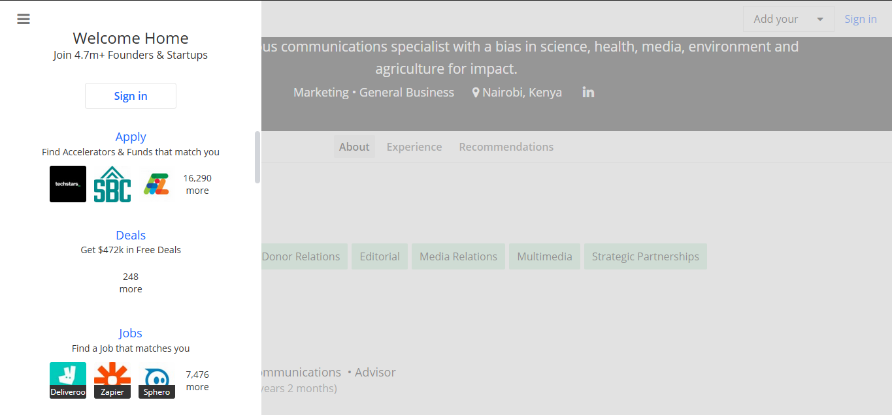
Project 2 - Dakoke Communications
The website features a sleek design and user-friendly navigation, making it easy for potential clients to learn more about the company and the services it offers. The website is optimized for both desktop and mobile viewing, ensuring that it is accessible to all potential clients.
Visit Site -
Project 3 - ECLAS Finance
The credit issuance website project was designed to streamline loan management processes. It offers a user-friendly interface for borrowers to apply for loans, and provides efficient tools for lenders to approve and monitor loans. It helps to improve the loan process for both borrowers and lenders.
Visit Site
Testimonials
"Silas did an excellent job on our website. He was able to take our ideas and turn them into a beautiful, user-friendly site. We highly recommend him for any web development projects."
"Silas is a pleasure to work with. He is very knowledgeable and was able to solve any issues that came up during the project. I would definitely hire him again in the future."
"I was impressed with Silas' ability to understand our needs and deliver exactly what we were looking for. The end result was a professional, well-designed website that exceeded our expectations."
Blog
- Latest
- All Blogs
Blog Post 1
5 Tips for Data Visualization
Data visualization is a powerful tool for understanding and communicating data insights. When done well, it can help the reader quickly and easily grasp complex concepts and trends. However, creating effective data visualizations can be challenging.
More Tips on Data Visualization
Data visualization is the process of creating graphical representations of data sets in order to better understand and communicate the underlying patterns and trends. Data visualizations can take many forms, including charts, maps, and graphs, and are used in a wide range of fields, including business, science, and journalism. In this blog post, we'll take a closer look at the importance of data visualization, the types of data visualizations available, and how to create effective data visualizations.
Why is data visualization important?
Data visualization is an important tool for understanding and communicating data insights. When data is presented in a visual format, it is often easier to see patterns and trends that may not be immediately apparent in raw data. Data visualizations can also help to highlight relationships between different data points, making it easier to draw conclusions and make decisions based on the data.
Types of data visualizations
There are many different types of data visualizations available, each suited to different types of data and purposes. Some common types of data visualizations include:
• Bar charts: Bar charts are used to compare the sizes of different categories. They can be horizontal or vertical and are useful for showing the differences between categories.
• Line charts: Line charts are used to show trends over time. They can be used to show how a value has changed over a period of time or to compare the trends of multiple variables.
• Scatter plots: Scatter plots are used to show the relationship between two variables. They can be used to show how one variable is affected by another or to identify trends and patterns in the data.
• Pie charts: Pie charts are used to show the proportions of different categories. They are useful for showing how a value is divided among different categories.
• Maps: Maps are used to show data geographically. They can be used to show how a value varies by location or to show the distribution of a value over a certain area.
Creating effective data visualizations
To create effective data visualizations, it's important to keep the following tips in mind:• Choose the right chart type: Different chart types are suitable for different types of data. Make sure to choose a chart type that effectively communicates the story you want to tell with your data.
• Use appropriate scales: The scales on your axes should be chosen appropriately for the data you are visualizing. For example, if you are visualizing a large range of values, it's usually best to use a logarithmic scale.
• Label axes and include a legend: It's important to clearly label the axes of your chart and include a legend if necessary. This helps the reader understand what is being plotted and how to interpret the data. For example, if you are creating a bar chart to compare the sales of different products, it's important to label the x-axis with the names of the products and the y-axis with the sales figures. If you are using different colors or symbols to represent different data points, a legend can help the reader understand what each color or symbol represents. By clearly labeling your axes and including a legend, you can help the reader understand and interpret your data visualization more easily.
• Use appropriate colors: The colors you choose for your chart can have a big impact on how the data is perceived. It's important to choose colors that are easy to distinguish from one another and that are not overly distracting. It's also a good idea to use color-blind friendly palettes if your audience may include people with color vision deficiencies.
• Keep it simple: It's important to keep your charts as simple as possible. Too much clutter can make it difficult for the reader to understand the data. It's usually best to include only the most important information in your chart and leave out unnecessary details.
Conclusion
Data visualization is a powerful tool for understanding and communicating data insights. By choosing the right chart type, using appropriate scales, labeling axes and including a legend, using appropriate colors, and keeping it simple, you can create data visualizations that effectively communicate your data insights and help your audience understand and remember your message.
Blog Post 2
Data Preprocessing Using Python
Data preprocessing is the process of cleaning and formatting data before it is analyzed or used in machine learning algorithms. In this blog post, we'll take a look at how to use Python for data preprocessing, including some common techniques and tools.
More on Python for Data Preprocessing
It is an essential step in the data science workflow, as raw data is often incomplete, inconsistent, or noisy, and needs to be cleaned and transformed before it can be used effectively.
Data preprocessing is the process of cleaning and formatting data before it is analyzed or used in machine learning algorithms. It is an important step in the data science workflow, as raw data is often incomplete, inconsistent, or noisy, and needs to be cleaned and transformed before it can be used effectively. In this blog post, we'll take a look at how to use Python for data preprocessing, including some common techniques and tools.
Step 1: Importing the data
The first step in data preprocessing is usually to import the data into Python. There are several ways to do this, depending on the format of the data. Some common formats for storing data include CSV (comma-separated values), JSON (JavaScript Object Notation), and Excel files.
To import a CSV file into Python, you can use the 'pandas' library, which provides powerful tools for working with tabular data. Here is an example of how to import a CSV file using 'pandas':
To import a JSON file, you can use the 'json' library, which is part of the Python standard library. Here is an example of how to import a JSON file using the 'json' library:
To import an Excel file, you can use the 'pandas' library again. Here is an example of how to import an Excel file using 'pandas':
Step 2: Cleaning the data
Once you have imported the data into Python, the next step is to clean it. This can involve a variety of tasks, such as:
• Handling missing values: Many datasets will have missing values, which can be indicated by a blank cell or a placeholder value such as 'NA'. To handle missing values, you can either drop rows or columns that contain missing values, or fill in the missing values with a default value such as the mean or median of the column.
• Handling outliers: Outliers are data points that are significantly different from the rest of the data. They can sometimes be valid data points, but they can also be errors or anomalies. To handle outliers, you can either drop them from the dataset or transform them using techniques such as winsorization or log transformation.
• Handling incorrect data types: Sometimes data may be stored in the wrong data type. For example, a column that should contain numerical values may be stored as strings. To fix this, you can cast the data to the correct data type using techniques such as '.astype()' in 'pandas'.
• Handling inconsistent data: Data may also be inconsistent, such as having different formats for the same type of data. To handle this, you can use techniques such as string manipulation and regular expressions to standardize the data.
Step 3: Transforming the data
After the data has been cleaned, the next step is usually to transform it into a form that is more suitable for analysis or machine learning. This can involve a variety of tasks, such as:
• Scaling the data: Scaling the data is the process of transforming the data so that it has a mean of 0 and a standard deviation of 1. This is often necessary for machine learning algorithms, as different features can have different scales, and this can affect the performance of the algorithm. There are several ways to scale data in Python, such as using the 'StandardScaler' class from the 'sklearn' library or using the 'scale()' function from the 'preprocessing' module.
• Encoding categorical data: Categorical data is data that is organized into categories, such as gender or product type. Machine learning algorithms cannot work with categorical data directly, so it needs to be encoded numerically. There are several ways to encode categorical data in Python, such as using the 'LabelEncoder' class from the 'sklearn' library or using the 'get_dummies()' function from 'pandas'.
• Splitting the data into training and testing sets: It is common practice to split the data into a training set and a testing set, so that the model can be trained and evaluated on separate data. 'The train_test_split()' function from the 'sklearn' library can be used to easily split the data into these sets.
Step 4: Saving the cleaned and transformed data
Once the data has been cleaned and transformed, it is often useful to save it for later use. This can be done using the 'to_csv()' function in 'pandas', which can save the data to a CSV file, or the 'to_excel()' function, which can save the data to an Excel file.
Conclusion
Data preprocessing is an essential step in the data science workflow, and Python provides a wide range of tools and libraries for cleaning and transforming data. By using the techniques and tools discussed in this blog post, you can effectively prepare your data for analysis or machine learning.
Blog Post 3
Machine learning
Machine learning is a rapidly growing field that has the potential to revolutionize the way organizations operate and make decisions. Machine learning algorithms are designed to learn from data, and can be used for a wide range of applications.
Machine learning is a rapidly growing field that has the potential to revolutionize the way organizations operate and make decisions. Machine learning algorithms are designed to learn from data, and can be used for a wide range of applications, from image and speech recognition to natural language processing and predictive analytics.
When it comes to using machine learning algorithms, one of the key things to consider is the type of problem you are trying to solve. Different machine learning algorithms are designed to solve different types of problems, and it is important to choose the right algorithm for your specific use case. Some of the most commonly used machine learning algorithms include supervised learning algorithms like linear regression and decision trees, unsupervised learning algorithms like clustering and dimensionality reduction, and reinforcement learning algorithms like Q-learning.
Another important aspect of using machine learning algorithms is data preparation. Machine learning algorithms require large amounts of data to train on, and it is important to have a clean and well-organized dataset to work with. This can include tasks such as data cleaning, data imputation, and feature engineering. Additionally, it is important to split the dataset into training, validation and test sets, to ensure that the model is properly evaluated and to prevent overfitting.
In terms of using machine learning in industry, there are many examples of companies and organizations that are using machine learning to improve their operations and gain a competitive advantage. For example, in the healthcare industry, machine learning algorithms are being used to predict patient outcomes, identify potential outbreaks of infectious diseases, and improve the efficiency of clinical trials. In the finance industry, machine learning algorithms are being used to detect fraudulent transactions, predict stock prices and portfolio returns, and identify potential investment opportunities.
One of the latest advancements in the field of machine learning is the use of deep learning, a subfield of machine learning that is based on artificial neural networks. Deep learning algorithms are designed to automatically learn features from data, and they have been used to achieve state-of-the-art results in a wide range of tasks, including image and speech recognition, natural language processing, and game playing.
Another recent advancement in machine learning is the use of reinforcement learning, a type of machine learning that is based on the concept of an agent learning to make decisions based on the rewards or penalties it receives. Reinforcement learning algorithms have been used to train agents to play complex games like Go and poker, and they have also been used to train robots to perform complex tasks like grasping and manipulation.
Another advancement in machine learning is the concept of Generative models, which can be used for a wide range of tasks such as image synthesis, text generation, and anomaly detection. Generative models such as GANs (Generative Adversarial Networks) and VAEs (Variational Autoencoder) have been used to generate realistic images, videos, speech and text.
In addition to deep learning and reinforcement learning, there are also many other exciting developments in the field of machine learning. For example, there are new algorithms and techniques being developed for interpretable machine learning, which aims to make machine learning models more transparent and understandable. There are also advances being made in the field of transfer learning, which allows models trained on one task to be used for other tasks.
Another important aspect of machine learning is the use of cloud-based platforms and services. These platforms and services, such as AWS, GCP, and Azure, provide organizations with the necessary infrastructure, tools, and services to develop and deploy machine learning models at scale. They also provide pre-built models and services that organizations can use to jumpstart their machine learning efforts.
Another recent trend in machine learning is the use of Federated learning, which allows multiple devices to collaborate and learn together while keeping their data private and secure. This approach is particularly useful in scenarios where data privacy and security are of paramount concern, such as in healthcare and finance. Federated learning enables multiple devices to train a model collectively without sharing their data, which allows for improved data privacy and security. Additionally, federated learning can also improve the performance of machine learning models by leveraging the distributed data from multiple devices. This approach has the potential to improve the scalability and robustness of machine learning models, and it is an area that is currently receiving a lot of attention from researchers and industry practitioners.
Another important consideration when working with machine learning is explainability and interpretability. As Machine Learning models become more complex, it becomes difficult to understand how they are making decisions. This can be a problem when it comes to sensitive applications such as healthcare, finance, and criminal justice, where the consequences of a mistake can be severe. To address this problem, researchers are developing techniques to make machine learning models more interpretable, such as local interpretable model-agnostic explanations (LIME) and SHAP (SHapley Additive exPlanations).
Additionally, there is a growing interest in using machine learning in edge devices and IoT systems. This is called Edge computing, where the data is processed on the device itself, rather than being sent to a central server for processing. This allows for real-time decision making, lower latency, and increased security.
Another trend in machine learning is the use of Federated Learning, which enables multiple devices to train a model collectively without sharing their data. This is particularly useful in scenarios where data privacy and security are important, such as in healthcare and finance.
Finally, there is a growing interest in using Machine learning for optimization and control in various domains such as finance, energy, and manufacturing. In this area, researchers are developing new algorithms and techniques to improve the performance of optimization and control systems using Machine Learning.
In conclusion, Machine learning is a rapidly growing field with a wide range of applications and the potential to revolutionize the way organizations operate and make decisions. It is important to choose the right algorithm for the specific problem, prepare the data properly, and keep in mind the latest advancements in the field. Additionally, it is important to consider the explainability, interpretability, Edge computing, Federated Learning, and optimization and control when working with Machine learning. With the right approach, organizations can harness the power of machine learning to gain a competitive advantage and improve their operations.
Blog Post 1
Data Governance and Privacy
Data governance and privacy are critical issues that organizations must address in order to effectively manage and protect their data. Good data governance practices help organizations ensure that their data is accurate, complete, and consistent, while also protecting against data breaches and other security threats.
Detailed Data Governance and Privacy Practices
Data governance and privacy are critical issues that organizations must address in order to effectively manage and protect their data. Good data governance practices help organizations ensure that their data is accurate, complete, and consistent, while also protecting against data breaches and other security threats.
One of the key best practices for data governance is to establish clear roles and responsibilities for data management. This includes designating a specific person or group to be responsible for data governance, as well as establishing clear guidelines for how data should be collected, stored, and used. This helps to ensure that there is a clear chain of command and decision-making power when it comes to data management, which can help to prevent confusion and errors. It also helps to ensure that there is someone who is accountable for data governance, which is essential for maintaining trust with stakeholders and customers.
Another important aspect of data governance is to establish policies and procedures for data quality. This includes measures for ensuring data accuracy and completeness, as well as procedures for handling errors and inconsistencies in the data. This can include processes for data validation, data cleaning, and data standardization, as well as systems for monitoring data quality over time. By putting these processes in place, organizations can ensure that their data is of high quality and that it can be trusted for decision-making and analysis.
In addition to data governance, organizations must also be mindful of data privacy concerns. This includes ensuring that personal data is collected and used in accordance with relevant laws and regulations, such as the Data Protection Act (2019) and the Kenya Information and Communications Act (1998). These regulations set out strict rules for how personal data can be collected, used, and shared, and organizations must ensure that they are in compliance with these rules in order to avoid fines and legal action.
One of the key best practices for data privacy is to be transparent about how data is collected and used. This includes providing clear and concise privacy notices to individuals, as well as giving them the option to opt out of data collection or sharing. This helps to build trust with customers and stakeholders, as they can see that the organization is being transparent and respectful of their privacy. It also helps to ensure that individuals are aware of how their data is being used and that they have control over it.
Another important aspect of data privacy is to have robust security measures in place to protect against data breaches. This includes using encryption and other security technologies to protect data, as well as conducting regular security audits and vulnerability assessments. This helps to ensure that data is protected from unauthorized access and that any vulnerabilities are identified and addressed as soon as possible.
In addition to technical measures, organizations must also have processes in place for handling data breaches and other security incidents. This includes having an incident response plan in place and regularly training staff on how to respond to a data breach. This helps to ensure that any breaches are identified and dealt with quickly and effectively, which can help to minimize the damage caused by the breach.
Data Governance and Privacy not only ensures compliance with legal regulations but it also ensures that the organization is being ethical in its data practices. Ethical considerations include ensuring that data is collected and used in a way that respects individuals’ rights and is in line with an organization's values. This can include ensuring that data is collected and used for legitimate purposes, that individuals have given their consent for their data to be collected and used, and that any data collected is kept secure and private.
Organizations must also be aware of the potential biases in their data and take steps to address them. This includes conducting regular audits of data to identify and correct biases, as well as being transparent about any biases that may be present in the data. Biases in data can lead to unfair and inaccurate conclusions and decisions, and can also perpetuate societal inequalities. It is crucial for organizations to take proactive steps to mitigate biases in their data, such as by using techniques like oversampling, data augmentation, and bias correction algorithms. Additionally, organizations should actively strive for diversity in their data collection and analysis efforts to ensure that their data is representative of the population they serve.
In conclusion, data governance and privacy are critical issues that organizations must address in order to effectively manage and protect their data. By establishing clear roles and responsibilities, establishing policies and procedures for data quality, being transparent about data collection and usage, having robust security measures, having incident response plan, being ethical and addressing biases in data, organizations can ensure that their data is protected and used in a responsible and compliant manner. It is crucial for organizations to stay updated with the legal and ethical considerations that govern data management and to be proactive in implementing best practices for data governance and privacy. By doing so, organizations can build trust with their customers and stakeholders, protect their reputation and avoid legal and financial consequences. Additionally, by proactively identifying and addressing biases in their data, organizations can ensure that their data is fair and accurate, and that their analysis and decision-making is inclusive and equitable.
Blog Post 2
The Benefits of Incorporating AI into Business Intelligence
Business intelligence (BI) is the process of collecting, storing, and analyzing data to gain insights and make informed decisions. It involves a variety of techniques and tools, such as data mining, data visualization, and dashboards, to help businesses make better decisions based on data.
Detailed Benefits of Incorporating AI into Business Intelligence
In recent years, artificial intelligence (AI) has become increasingly popular in the field of BI. AI is a subset of machine learning that involves the development of algorithms that can learn from data and make predictions or decisions without explicit programming. By incorporating AI into BI, businesses can gain a number of benefits.
1. Improved data analysis: One of the main benefits of incorporating AI into BI is the ability to analyze large amounts of data quickly and accurately. AI algorithms can identify patterns and trends that might not be obvious to humans, helping businesses make more informed decisions based on data. For example, a retail company could use AI to analyze customer purchase data and identify trends in customer behavior, such as which products are most popular, or what factors influence customer loyalty. This can help the company make more informed decisions about things like product development, marketing, and sales strategies.
2. Enhanced accuracy: Another benefit of incorporating AI into BI is the increased accuracy of predictions and decisions. AI algorithms are less prone to human error, as they can analyze data without the bias or subjectivity that can sometimes be present in human decision-making. This can lead to more accurate predictions and better decision-making. For example, a financial company could use AI to analyze market data and make more accurate predictions about future market trends, which could help the company make better investment decisions.
3. Increased efficiency: Another benefit of incorporating AI into BI is the increased efficiency of decision-making. AI algorithms can analyze data much faster than humans, allowing businesses to make decisions more quickly and efficiently. This can save time and resources, and help businesses stay competitive in fast-moving markets. For example, a healthcare company could use AI to analyze patient data and make more efficient decisions about treatment plans or resource allocation.
4. Improved customer experience: By using AI to analyze customer data, businesses can gain a better understanding of their customers' needs and preferences. This can help businesses provide more personalized and relevant products and services, improving the customer experience. For example, a retail company could use AI to analyze customer purchase data and make recommendations to customers based on their individual preferences and past purchases. This can help the company build loyalty and drive sales.
5. Greater agility: With AI, businesses can quickly adapt to changing market conditions and customer needs. AI algorithms can learn from data and make predictions in real-time, allowing businesses to respond to changes more quickly and effectively. For example, a manufacturing company could use AI to analyze production data and make adjustments to the production process in real-time to improve efficiency and reduce waste.
In conclusion, incorporating AI into business intelligence can bring a number of benefits to businesses. By using AI to analyze data, businesses can make more informed decisions, improve accuracy and efficiency, and enhance the customer experience. As AI continues to advance, it is likely to become an increasingly important part of the BI landscape, helping businesses make better decisions and stay competitive in a rapidly changing world.
Blog Post 3
Data analysis
Data analysis is a critical process that helps organizations make sense of the vast amounts of data that they collect and generate. Effective data analysis can help organizations gain valuable insights, make data-driven decisions, and improve their operations.
Detailed Data Analysis Strategy
Data analysis is a critical process that helps organizations make sense of the vast amounts of data that they collect and generate. Effective data analysis can help organizations gain valuable insights, make data-driven decisions, and improve their operations.
One of the key strategies for data analysis is to start with a clear understanding of the problem you are trying to solve. It's important to have a clear understanding of what questions you want to answer and what outcomes you hope to achieve. This will help you to focus your analysis and ensure that you are using the appropriate tools and techniques.
Another important strategy is to explore your data thoroughly before diving into more complex analysis. This can include visualizing your data using charts and plots, as well as using basic statistics to understand the distribution and patterns of your data. This exploratory data analysis (EDA) is an important step in understanding your data and can help you to identify any issues or outliers that need to be addressed.
When it comes to using data analysis tools and techniques, there are a wide range of options available. Some of the most commonly used tools include spreadsheets, data visualization software, and statistical software. For more advanced analysis, tools such as R and Python are widely used for data manipulation, cleaning, and modeling.
Another important aspect of data analysis is data cleaning, which is the process of identifying and correcting errors, inconsistencies, and missing values in your data. This can be a time-consuming task, but it is essential for ensuring that your analysis is based on accurate and reliable data. Data cleaning can include tasks such as removing duplicate records, correcting data entry errors, and imputing missing values.
Once your data is cleaned and prepared, you can begin to apply more advanced analysis techniques. This can include statistical analysis, machine learning, and data mining. These techniques can help you to uncover patterns, trends, and insights that are not immediately obvious from visualizing your data.
Another key aspect of data analysis is data visualization. Visualizing your data can help to make it more understandable and accessible to stakeholders. It can also help to identify patterns and trends that are not immediately obvious from looking at raw data. There are a wide range of data visualization tools available, such as Tableau, Power BI, and D3.js, which can help you to create interactive and engaging visualizations.
In terms of case studies, data analysis has been used in a wide range of industries and applications. For example, in the retail industry, data analysis can be used to optimize pricing and inventory management, as well as to analyze customer behavior and preferences. In the healthcare industry, data analysis can be used to improve patient outcomes and reduce costs by identifying patterns in patient data and predicting potential health risks. In finance, data analysis can be used to detect fraud, predict stock prices, and identify potential investment opportunities.
Another important aspect of data analysis is data governance. This refers to the policies, procedures, and standards that organizations use to manage their data. Good data governance can help to ensure that data is accurate, accessible, and secure, and that it is used ethically and responsibly.
Finally, when it comes to data analysis, it is important to be aware of the legal and ethical considerations that are involved. This can include issues such as data privacy and security, data bias and discrimination, and data ownership and access. It is important for organizations to stay up-to-date with these considerations and to ensure that their data analysis practices are compliant with relevant laws and regulations.
In conclusion, data analysis is a critical process that helps organizations make sense of the vast amounts of data that they collect and generate. Effective data analysis can help organizations gain valuable insights, make data-driven decisions, and improve their operations. By starting with a clear understanding of the problem, exploring your data, using appropriate tools and techniques, visualizing your data, and being aware of legal and ethical considerations, organizations can ensure that their data analysis is accurate, reliable, and actionable.
Blog Post 4
Industry Specific Analysis
Data analysis is an essential process that helps organizations in various industries to make sense of the vast amounts of data they collect and generate. However, the data analysis techniques and best practices can vary depending on the specific industry. In this blog, we will explore some of the data analysis techniques and best practices tailored to specific industries such as retail, healthcare, and banking.
Detailed Industry Specific Analysis
Data analysis is an essential process that helps organizations in various industries to make sense of the vast amounts of data they collect and generate. However, the data analysis techniques and best practices can vary depending on the specific industry. In this blog, we will explore some of the data analysis techniques and best practices tailored to specific industries such as retail, healthcare, and banking.
Retail industry is one of the industries that heavily rely on data analysis. Retailers use data analysis to optimize pricing, inventory management, and to analyze customer behavior and preferences. Retailers collect data from various sources such as customer purchase history, social media, and market research. This data can be analyzed using techniques such as market basket analysis, customer segmentation, and predictive modeling to identify patterns and trends that can help retailers to make data-driven decisions.
In the healthcare industry, data analysis plays a crucial role in improving patient outcomes and reducing costs. Hospitals and healthcare providers collect a large amount of data from various sources such as electronic health records, clinical data, and research studies. This data can be analyzed using techniques such as statistical analysis, machine learning, and data mining to identify patterns and trends that can help healthcare providers to make better clinical decisions, predict potential health risks, and improve patient outcomes.
In the banking industry, data analysis is used to detect fraud, predict stock prices, and identify potential investment opportunities. Banks collect data from various sources such as financial transactions, customer demographics, and market research. This data can be analyzed using techniques such as anomaly detection, predictive modeling, and network analysis to identify patterns and trends that can help banks to mitigate risk and improve their operations.
In the energy industry, data analysis is used to optimize production, predict equipment failures, and reduce costs. Energy companies collect data from various sources such as sensor data, weather data, and financial data. This data can be analyzed using techniques such as machine learning, statistical analysis, and data mining to identify patterns and trends that can help energy companies to improve their operations and reduce costs.
In the manufacturing industry, data analysis is used to optimize production, predict equipment failures, and reduce costs. Manufacturing companies collect data from various sources such as sensor data, production data, and financial data. This data can be analyzed using techniques such as machine learning, statistical analysis, and data mining to identify patterns and trends that can help manufacturing companies to improve their operations, reduce costs, and improve product quality. Some specific techniques used in the manufacturing industry include predictive maintenance, process optimization, and supply chain analysis.
Predictive maintenance uses machine learning algorithms to predict when equipment is likely to fail, allowing companies to schedule maintenance before a breakdown occurs. Process optimization uses statistical methods to improve production processes, increasing efficiency and reducing costs. Supply chain analysis uses data visualization and network analysis to identify bottlenecks and inefficiencies in the supply chain, which can then be addressed to improve overall performance.
In the logistics and transportation industry, data analysis is used to optimize routes, predict demand, and reduce costs. Logistics companies collect data from various sources such as GPS data, weather data, and financial data. This data can be analyzed using techniques such as route optimization, demand forecasting, and network analysis to identify patterns and trends that can help logistics companies to improve their operations and reduce costs.
In the agriculture industry, data analysis is used to optimize crop yields, predict weather patterns and pests, and reduce costs. Agriculture companies collect data from various sources such as weather data, soil data, and financial data. This data can be analyzed using techniques such as crop modeling, weather forecasting, and pest prediction to identify patterns and trends that can help agriculture companies to improve their operations and reduce costs.
In the real estate industry, data analysis is used to predict property values, identify potential investment opportunities, and improve marketing strategies. Real estate companies collect data from various sources such as property data, market data, and customer data. This data can be analyzed using techniques such as property valuation, investment analysis, and customer segmentation to identify patterns and trends that can help real estate companies to improve their operations and reduce costs.
In conclusion, data analysis is an essential process that helps organizations in various industries to make sense of the vast amounts of data they collect and generate. The data analysis techniques and best practices can vary depending on the specific industry. By understanding the specific data analysis techniques and best practices tailored to specific industries such as retail, healthcare, banking, energy, manufacturing, logistics and transportation, agriculture, and real estate, organizations can ensure that their data analysis is accurate, reliable, and actionable.
Blog Post 5
Big Data
Big data refers to the large and complex data sets that organizations are increasingly facing today. These data sets can come from a wide range of sources, such as social media, IoT devices, and transactional systems, and they can be used to gain valuable insights and drive business decisions. However, working with big data can be challenging, and organizations need to have effective strategies, tools, and technologies in place to be able to process and analyze these large data sets.
Large and Complex Data Sets
Big data refers to the large and complex data sets that organizations are increasingly facing today. These data sets can come from a wide range of sources, such as social media, IoT devices, and transactional systems, and they can be used to gain valuable insights and drive business decisions. However, working with big data can be challenging, and organizations need to have effective strategies, tools, and technologies in place to be able to process and analyze these large data sets.
One of the key strategies for working with big data is to start with a clear understanding of the problem you are trying to solve. It's important to have a clear understanding of what questions you want to answer and what outcomes you hope to achieve. This will help you to focus your analysis and ensure that you are using the appropriate tools and techniques.
Another important strategy is to use distributed computing architectures to handle large data sets. This can include technologies such as Hadoop, Spark, and Storm, which allow you to process and analyze data in parallel across a cluster of machines. These architectures are designed to handle large data sets and can help to improve the scalability and performance of your data processing and analysis.
In addition to distributed computing architectures, there are also a wide range of tools and technologies available for processing and analyzing big data. These include data warehousing and data management tools such as Apache Cassandra, MongoDB, and Amazon Redshift, as well as data visualization and business intelligence tools such as Tableau, Power BI, and Looker.
Another important aspect of working with big data is data cleaning, which is the process of identifying and correcting errors, inconsistencies, and missing values in your data. This can be a time-consuming task, but it is essential for ensuring that your analysis is based on accurate and reliable data. Data cleaning can include tasks such as removing duplicate records, correcting data entry errors, and imputing missing values.
Once your data is cleaned and prepared, you can begin to apply more advanced analysis techniques. This can include statistical analysis, machine learning, and data mining. These techniques can help you to uncover patterns, trends, and insights that are not immediately obvious from visualizing your data.
Another important aspect of working with big data is data governance. This refers to the policies, procedures, and standards that organizations use to manage their data. Good data governance can help to ensure that data is accurate, accessible, and secure, and that it is used ethically and responsibly. It is also important to consider data privacy and security when working with big data, as large data sets can contain sensitive information that needs to be protected.
Another trend in big data is the use of cloud computing. Cloud providers such as Amazon Web Services, Microsoft Azure, and Google Cloud offer a range of big data services and tools that can help organizations to store, process, and analyze large data sets. This can include data warehousing, data management, data visualization, and machine learning services. Using cloud computing can help organizations to reduce the costs and complexity of working with big data, and it can also provide scalability and flexibility.
Finally, case studies of organizations that have successfully leveraged big data can provide valuable insights into how to effectively work with large data sets. For example, Facebook uses big data to personalize the user experience, Netflix uses it to recommend movies and TV shows, and WalMart uses it to optimize inventory management. These examples demonstrate how big data can be used to gain valuable insights, drive business decisions and improve operations.
In conclusion, big data is a rapidly growing field with a wide range of applications and the potential to revolutionize the way organizations operate and make decisions. It is important to start with a clear understanding of the problem you are trying to solve, use distributed computing architectures, and use appropriate tools and technologies for processing and analyzing big data. Additionally, it is important to consider data governance, data privacy, data security, cloud computing and case studies of organizations that have successfully leveraged big data when working with big data. With the right approach, organizations can harness the power of big data to gain a competitive advantage and improve their operations.
Blog Post 6
Data Engineering
Data engineering is the process of preparing, cleaning, and managing large data sets to make them usable for analysis and decision-making. It is a critical aspect of working with big data, and it requires a set of best practices, tools, and technologies to be effective.
Detailed Data Engineering
Data engineering is the process of preparing, cleaning, and managing large data sets to make them usable for analysis and decision-making. It is a critical aspect of working with big data, and it requires a set of best practices, tools, and technologies to be effective. In this blog, we will explore some of the best practices for data cleaning, preprocessing, and management, tutorials on using data engineering tools and technologies, and case studies of data engineering projects.
One of the best practices for data cleaning is to start by understanding the structure and quality of the data. This includes identifying data types, missing values, and outliers, as well as understanding the relationships between different data elements. This initial assessment can help to identify potential issues and guide the cleaning process.
Another best practice is to use automated tools and scripts to clean the data. This can include using libraries such as pandas and OpenRefine, as well as custom scripts written in Python or R. Automating the cleaning process can help to ensure consistency and speed up the process.
Data preprocessing is another important aspect of data engineering. It involves transforming the data into a format that can be used for analysis and decision-making. This can include tasks such as normalizing data, creating new features, and encoding categorical variables. Preprocessing can also include data reduction techniques such as sampling and dimensionality reduction to make the data more manageable for analysis.
Data management is also an important aspect of data engineering. This includes tasks such as storing, backup and archiving of data, and ensuring data security and access. Data management can also include data governance and data quality management to ensure data is accurate, accessible and secure.
When it comes to tools and technologies, there are a wide range of options available for data engineering. Some of the most commonly used tools include Apache Hadoop, Apache Spark, and Apache Kafka for data processing and storage, as well as Elasticsearch, MongoDB and Apache Cassandra for data management.
Another important aspect of data engineering is using cloud computing. Cloud providers such as Amazon Web Services, Microsoft Azure, and Google Cloud offer a range of data engineering services and tools that can help organizations to store, process, and manage large data sets.
In terms of case studies, data engineering has been used in a wide range of industries and applications. For example, in e-commerce, data engineering can be used to improve product recommendations, optimize pricing and inventory management, as well as to analyze customer behavior and preferences. In healthcare, data engineering can be used to improve patient outcomes and reduce costs by cleaning and preprocessing patient data, creating new features and encoding categorical variables. In finance, data engineering can be used to detect fraud, predict stock prices, and identify potential investment opportunities by using data management, data governance and data quality management techniques.
In conclusion, data engineering is a critical process that helps organizations to prepare, clean, and manage large data sets to make them usable for analysis and decision-making. It requires a set of best practices, tools, and technologies to be effective. By understanding the structure and quality of data, using automated tools and scripts to clean data, preprocessing data, using data management techniques, using appropriate tools and technologies and using cloud computing, organizations can ensure that their data is accurate, reliable, and actionable. Additionally, by studying case studies of data engineering projects, organizations can learn from the successes and challenges
Blog Post 7
5 Tips for Successful Data Visualization
Data visualization is a powerful tool for understanding and communicating data insights. When done well, it can help the reader quickly and easily grasp complex concepts and trends. However, creating effective data visualizations can be challenging.
More Tips on Data Visualization
Data visualization is the process of creating graphical representations of data sets in order to better understand and communicate the underlying patterns and trends. Data visualizations can take many forms, including charts, maps, and graphs, and are used in a wide range of fields, including business, science, and journalism. In this blog post, we'll take a closer look at the importance of data visualization, the types of data visualizations available, and how to create effective data visualizations.
Why is data visualization important?
Data visualization is an important tool for understanding and communicating data insights. When data is presented in a visual format, it is often easier to see patterns and trends that may not be immediately apparent in raw data. Data visualizations can also help to highlight relationships between different data points, making it easier to draw conclusions and make decisions based on the data.
Types of data visualizations
There are many different types of data visualizations available, each suited to different types of data and purposes. Some common types of data visualizations include:
• Bar charts: Bar charts are used to compare the sizes of different categories. They can be horizontal or vertical and are useful for showing the differences between categories.
• Line charts: Line charts are used to show trends over time. They can be used to show how a value has changed over a period of time or to compare the trends of multiple variables.
• Scatter plots: Scatter plots are used to show the relationship between two variables. They can be used to show how one variable is affected by another or to identify trends and patterns in the data.
• Pie charts: Pie charts are used to show the proportions of different categories. They are useful for showing how a value is divided among different categories.
• Maps: Maps are used to show data geographically. They can be used to show how a value varies by location or to show the distribution of a value over a certain area.
Creating effective data visualizations
To create effective data visualizations, it's important to keep the following tips in mind:• Choose the right chart type: Different chart types are suitable for different types of data. Make sure to choose a chart type that effectively communicates the story you want to tell with your data.
• Use appropriate scales: The scales on your axes should be chosen appropriately for the data you are visualizing. For example, if you are visualizing a large range of values, it's usually best to use a logarithmic scale.
• Label axes and include a legend: It's important to clearly label the axes of your chart and include a legend if necessary. This helps the reader understand what is being plotted and how to interpret the data. For example, if you are creating a bar chart to compare the sales of different products, it's important to label the x-axis with the names of the products and the y-axis with the sales figures. If you are using different colors or symbols to represent different data points, a legend can help the reader understand what each color or symbol represents. By clearly labeling your axes and including a legend, you can help the reader understand and interpret your data visualization more easily.
• Use appropriate colors: The colors you choose for your chart can have a big impact on how the data is perceived. It's important to choose colors that are easy to distinguish from one another and that are not overly distracting. It's also a good idea to use color-blind friendly palettes if your audience may include people with color vision deficiencies.
• Keep it simple: It's important to keep your charts as simple as possible. Too much clutter can make it difficult for the reader to understand the data. It's usually best to include only the most important information in your chart and leave out unnecessary details.
Conclusion
Data visualization is a powerful tool for understanding and communicating data insights. By choosing the right chart type, using appropriate scales, labeling axes and including a legend, using appropriate colors, and keeping it simple, you can create data visualizations that effectively communicate your data insights and help your audience understand and remember your message.
Blog Post 8
How to Use Python for Data Preprocessing
Data preprocessing is the process of cleaning and formatting data before it is analyzed or used in machine learning algorithms. In this blog post, we'll take a look at how to use Python for data preprocessing, including some common techniques and tools.
More on Python for Data Preprocessing
It is an essential step in the data science workflow, as raw data is often incomplete, inconsistent, or noisy, and needs to be cleaned and transformed before it can be used effectively.
Data preprocessing is the process of cleaning and formatting data before it is analyzed or used in machine learning algorithms. It is an important step in the data science workflow, as raw data is often incomplete, inconsistent, or noisy, and needs to be cleaned and transformed before it can be used effectively. In this blog post, we'll take a look at how to use Python for data preprocessing, including some common techniques and tools.
Step 1: Importing the data
The first step in data preprocessing is usually to import the data into Python. There are several ways to do this, depending on the format of the data. Some common formats for storing data include CSV (comma-separated values), JSON (JavaScript Object Notation), and Excel files.
To import a CSV file into Python, you can use the 'pandas' library, which provides powerful tools for working with tabular data. Here is an example of how to import a CSV file using 'pandas':
To import a JSON file, you can use the 'json' library, which is part of the Python standard library. Here is an example of how to import a JSON file using the 'json' library:
To import an Excel file, you can use the 'pandas' library again. Here is an example of how to import an Excel file using 'pandas':
Step 2: Cleaning the data
Once you have imported the data into Python, the next step is to clean it. This can involve a variety of tasks, such as:
• Handling missing values: Many datasets will have missing values, which can be indicated by a blank cell or a placeholder value such as 'NA'. To handle missing values, you can either drop rows or columns that contain missing values, or fill in the missing values with a default value such as the mean or median of the column.
• Handling outliers: Outliers are data points that are significantly different from the rest of the data. They can sometimes be valid data points, but they can also be errors or anomalies. To handle outliers, you can either drop them from the dataset or transform them using techniques such as winsorization or log transformation.
• Handling incorrect data types: Sometimes data may be stored in the wrong data type. For example, a column that should contain numerical values may be stored as strings. To fix this, you can cast the data to the correct data type using techniques such as '.astype()' in 'pandas'.
• Handling inconsistent data: Data may also be inconsistent, such as having different formats for the same type of data. To handle this, you can use techniques such as string manipulation and regular expressions to standardize the data.
Step 3: Transforming the data
After the data has been cleaned, the next step is usually to transform it into a form that is more suitable for analysis or machine learning. This can involve a variety of tasks, such as:
• Scaling the data: Scaling the data is the process of transforming the data so that it has a mean of 0 and a standard deviation of 1. This is often necessary for machine learning algorithms, as different features can have different scales, and this can affect the performance of the algorithm. There are several ways to scale data in Python, such as using the 'StandardScaler' class from the 'sklearn' library or using the 'scale()' function from the 'preprocessing' module.
• Encoding categorical data: Categorical data is data that is organized into categories, such as gender or product type. Machine learning algorithms cannot work with categorical data directly, so it needs to be encoded numerically. There are several ways to encode categorical data in Python, such as using the 'LabelEncoder' class from the 'sklearn' library or using the 'get_dummies()' function from 'pandas'.
• Splitting the data into training and testing sets: It is common practice to split the data into a training set and a testing set, so that the model can be trained and evaluated on separate data. 'The train_test_split()' function from the 'sklearn' library can be used to easily split the data into these sets.
Step 4: Saving the cleaned and transformed data
Once the data has been cleaned and transformed, it is often useful to save it for later use. This can be done using the 'to_csv()' function in 'pandas', which can save the data to a CSV file, or the 'to_excel()' function, which can save the data to an Excel file.
Conclusion
Data preprocessing is an essential step in the data science workflow, and Python provides a wide range of tools and libraries for cleaning and transforming data. By using the techniques and tools discussed in this blog post, you can effectively prepare your data for analysis or machine learning.
Blog Post 9
Machine learning
Machine learning is a rapidly growing field that has the potential to revolutionize the way organizations operate and make decisions. Machine learning algorithms are designed to learn from data, and can be used for a wide range of applications.
Machine learning is a rapidly growing field that has the potential to revolutionize the way organizations operate and make decisions. Machine learning algorithms are designed to learn from data, and can be used for a wide range of applications, from image and speech recognition to natural language processing and predictive analytics.
When it comes to using machine learning algorithms, one of the key things to consider is the type of problem you are trying to solve. Different machine learning algorithms are designed to solve different types of problems, and it is important to choose the right algorithm for your specific use case. Some of the most commonly used machine learning algorithms include supervised learning algorithms like linear regression and decision trees, unsupervised learning algorithms like clustering and dimensionality reduction, and reinforcement learning algorithms like Q-learning.
Another important aspect of using machine learning algorithms is data preparation. Machine learning algorithms require large amounts of data to train on, and it is important to have a clean and well-organized dataset to work with. This can include tasks such as data cleaning, data imputation, and feature engineering. Additionally, it is important to split the dataset into training, validation and test sets, to ensure that the model is properly evaluated and to prevent overfitting.
In terms of using machine learning in industry, there are many examples of companies and organizations that are using machine learning to improve their operations and gain a competitive advantage. For example, in the healthcare industry, machine learning algorithms are being used to predict patient outcomes, identify potential outbreaks of infectious diseases, and improve the efficiency of clinical trials. In the finance industry, machine learning algorithms are being used to detect fraudulent transactions, predict stock prices and portfolio returns, and identify potential investment opportunities.
One of the latest advancements in the field of machine learning is the use of deep learning, a subfield of machine learning that is based on artificial neural networks. Deep learning algorithms are designed to automatically learn features from data, and they have been used to achieve state-of-the-art results in a wide range of tasks, including image and speech recognition, natural language processing, and game playing.
Another recent advancement in machine learning is the use of reinforcement learning, a type of machine learning that is based on the concept of an agent learning to make decisions based on the rewards or penalties it receives. Reinforcement learning algorithms have been used to train agents to play complex games like Go and poker, and they have also been used to train robots to perform complex tasks like grasping and manipulation.
Another advancement in machine learning is the concept of Generative models, which can be used for a wide range of tasks such as image synthesis, text generation, and anomaly detection. Generative models such as GANs (Generative Adversarial Networks) and VAEs (Variational Autoencoder) have been used to generate realistic images, videos, speech and text.
In addition to deep learning and reinforcement learning, there are also many other exciting developments in the field of machine learning. For example, there are new algorithms and techniques being developed for interpretable machine learning, which aims to make machine learning models more transparent and understandable. There are also advances being made in the field of transfer learning, which allows models trained on one task to be used for other tasks.
Another important aspect of machine learning is the use of cloud-based platforms and services. These platforms and services, such as AWS, GCP, and Azure, provide organizations with the necessary infrastructure, tools, and services to develop and deploy machine learning models at scale. They also provide pre-built models and services that organizations can use to jumpstart their machine learning efforts.
Another recent trend in machine learning is the use of Federated learning, which allows multiple devices to collaborate and learn together while keeping their data private and secure. This approach is particularly useful in scenarios where data privacy and security are of paramount concern, such as in healthcare and finance. Federated learning enables multiple devices to train a model collectively without sharing their data, which allows for improved data privacy and security. Additionally, federated learning can also improve the performance of machine learning models by leveraging the distributed data from multiple devices. This approach has the potential to improve the scalability and robustness of machine learning models, and it is an area that is currently receiving a lot of attention from researchers and industry practitioners.
Another important consideration when working with machine learning is explainability and interpretability. As Machine Learning models become more complex, it becomes difficult to understand how they are making decisions. This can be a problem when it comes to sensitive applications such as healthcare, finance, and criminal justice, where the consequences of a mistake can be severe. To address this problem, researchers are developing techniques to make machine learning models more interpretable, such as local interpretable model-agnostic explanations (LIME) and SHAP (SHapley Additive exPlanations).
Additionally, there is a growing interest in using machine learning in edge devices and IoT systems. This is called Edge computing, where the data is processed on the device itself, rather than being sent to a central server for processing. This allows for real-time decision making, lower latency, and increased security.
Another trend in machine learning is the use of Federated Learning, which enables multiple devices to train a model collectively without sharing their data. This is particularly useful in scenarios where data privacy and security are important, such as in healthcare and finance.
Finally, there is a growing interest in using Machine learning for optimization and control in various domains such as finance, energy, and manufacturing. In this area, researchers are developing new algorithms and techniques to improve the performance of optimization and control systems using Machine Learning.
In conclusion, Machine learning is a rapidly growing field with a wide range of applications and the potential to revolutionize the way organizations operate and make decisions. It is important to choose the right algorithm for the specific problem, prepare the data properly, and keep in mind the latest advancements in the field. Additionally, it is important to consider the explainability, interpretability, Edge computing, Federated Learning, and optimization and control when working with Machine learning. With the right approach, organizations can harness the power of machine learning to gain a competitive advantage and improve their operations.
Tweets
Contact Us
Company Address
Silas Mugambi Mungiria
Email: mungiria8@gmail.com
Phone: +(254) 723-396403
Location: Nairobi, NRB, Kenya
Useful Links
- → About Us
- → Our Services
- → Blog
- → Terms of Service
- → FAQ
Our Services
- ✓ Data Collection and Cleaning
- ✓ Data Exploration and Visualization
- ✓ Data Mining and Predictive Modeling
- ✓ Data Dashboards and Reporting
- ✓ Big Data Analytics
- ✓ Web Development
- ✓ E-commerce Development
- ✓ Responsive Web Design